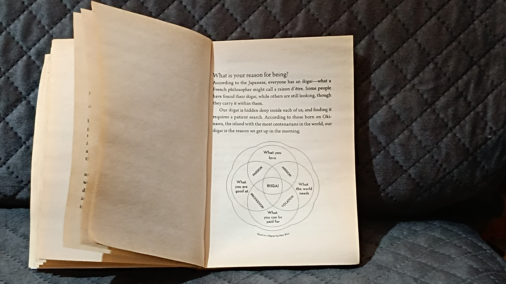
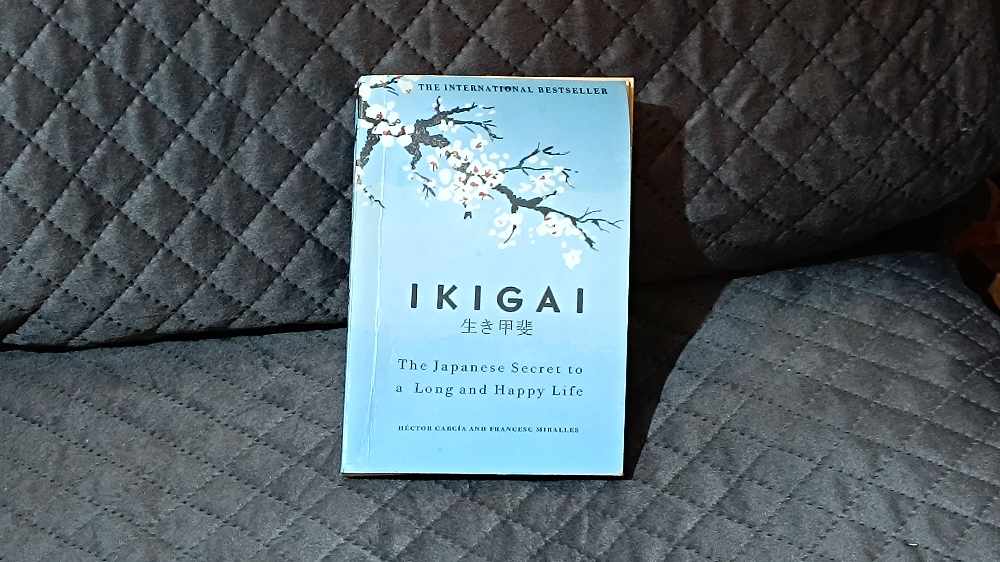

IKIGAI Book Review
” written by Héctor García and Francesc Miralles.
Introduction
Ikigai, the Japanese concept of self-improvement, has been gaining traction in the Western world, particularly in the realm of business and leadership. The book by Héctor García and Francesc Miralles, titled "The 7 Habits of Highly Effective People," offers a comprehensive exploration of this powerful
Important Points
- It explains the Japanese concept of ikigai, which means "a reason for living" or "a reason to wake up in the morning."
- The book says that everyone has their own ikigai. It is found where four things meet
- What you love
- What you are good at
- What the world needs
- What you can be paid for

The authors share lessons from the Japanese island of Okinawa, where people live long and happy lives. They explain that living with purpose, staying active, and connecting with others can help you live a happy and healthy life. The book encourages readers to find their own ikigai to live a more meaningful life.
Recommendation
I highly recommend this book to anyone interested in learning more about ikigai and self-improvement. The author, Héctor García and Francesc Miralles, has a knack for explaining complex ideas in a way that is accessible and engaging.
